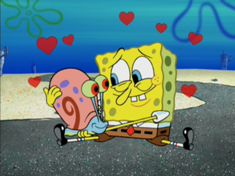

About Spongebob
Spongebob is a fry cook at the Krusty Krab. He lives in a pineapple in the town of Bikini Bottom. Spongebob has a pet snail named Gary. His hobbies include, jellyfishing, cooking Krabby Patties, and hanging out with his friends.
Spongebob and his pet snail Gary
Characteristics of Spongebob
- He is a yellow sponge
- He loves to have fun
- He enjoys his job at the Krusty Krab
- He still does not have his boating liscense
Spongebob's Friends
Spongebob is friends with his neighbor Patrick Star. They hunt jellyfish together. He is also good friends with Sandy Cheeks, an underwater squirrell from Texas. His other neighbor, Squidward, and him often quarel, but still find themselves spending much time together, as they both work at the same establishment. Spongebob is also good pals with his boss at the Krusty Krab, Mr. Krabs. Click the links below to read more about Spongebob's friends.;